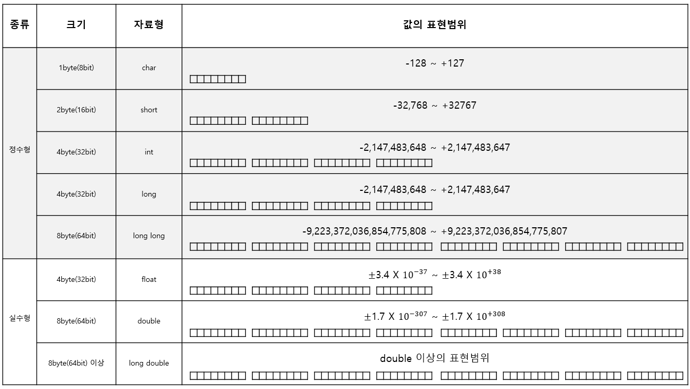
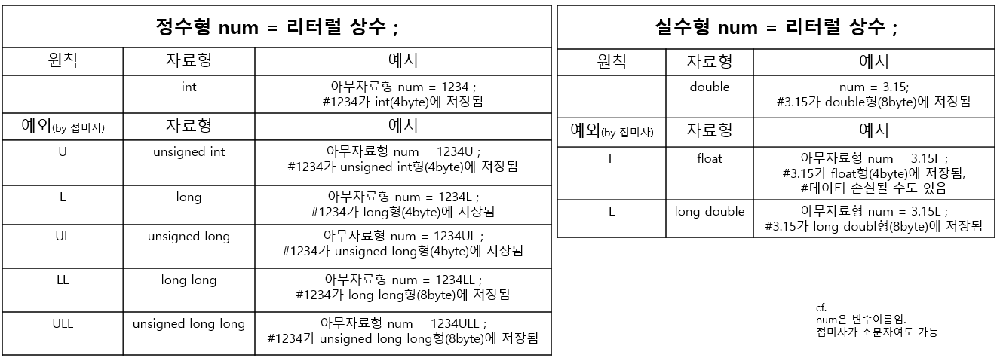

0. 들어가기
1.C언어란?
사람이 C언어로 이야기하면
컴파일러가 C언어->기계어로 통역을 해주고
컴퓨터가 기계어로 이해한다.
2. C언어 장점
C언어는 절차지향적이다.
C언어는 이식성이 좋다.
3. C언어 logic
1. 프로그램 작성
2. 컴파일
3. 링크
4. C언어 프로그램 생성시 주의사항
C프로그램은 소스파일, 헤더파일로 나뉜다.
C언어의 소스파일 확장자는 .c로 해야한다.
5. C언어 프로그램 실행 관련 단축키
빌드 : CTRL + SHIFT + B
프로그램 실행 = 디버그하지 않고 시작 = CTRL + F5
#include <stdio.h> : 헤더파일 선언 :
int main(void) : int=출력형태, main=함수이름, void=입력형태
{
함수 내용;
}
printf같은 기본적으로 만들어져 있는 함수를 표준함수라고하며 이들이 모여있는 것을 표준 라이브러리라고 한다.
return : 함수를 호출한 영역으로 값을 전달(반환) : main함수 호출은 운영체제(Windows or Linux)가 하므로, 0은 운영체제에게 반환한다.
6. 주석
블록단위 주석 /* */
행 단위 주석 //
블록단위 주석 안에 행 단위 주석 들어가는 것은 가능
/*
/* */ 불가능
*/
/*
// 가능
*/
1. 재료 구하기
1. 데이터 표현방식
데이터 타입은
숫자 : 정수, 실수
문자
불리언 -> 비교연산자와 관련 있음
으로 나뉜다.
2진수, 10진수, 16진수에 익숙해지자.
8bit = 1byte
int num1 = 10; //특별한 선언이 없으면 10진수로 인식
int num2 = 0xA; // 0x로 시작하면 16진수로 인식
int num3 = 012; // 0으로 시작하면 8진수로 인식
표현방식이 다르다고 해서 저장값이 달라지진 않는다.
컴퓨터는 2진수의 형태로 값을 저장한다.
자료형은 데이터를 표현하는 기준이다.
자료형별 크기가 사실 위의 표가 일반적인 기준일뿐, 컴파일러마다 다를 수 있다.
C언어 표준에서 정확히 정해놓고 있지 않음.
1. 숫자

1. 정수
1.0. 정수 표현하기 #양의 정수 <- 2의 보수 -> 음의 정수
정수의 가장 왼쪽에 존재하는 비트는 부호비트이다. MSB(Most Significant Bit)라고 불린다.
나머지 비트들은 데이터의 크기를 나타냄.
00000000
01000100 00100000 00010100
초록색 부분은 부호를 나타내고 0이면 양수, 1이면 음수이다.
파란색 부분이 크기를 나타낸다.
양수일 땐, 직관적으로 2진법으로 계산하면 되지만,
음수일땐 2의 보수법이라는 계산을 거쳐야 크기가 파악이 된다.
양의 정수
음의 정수
int num1 = 16; 이라고 입력하면 컴퓨터는
00000000 00000000 00000000 00010000이라고 쓴다.
cf. int는 일반적으로 4바이트(32비트)를 가진다
int num2 = -16; 이라고 입력하면 컴퓨터는
11111111 11111111 11111111 11110000으로 인식한다.
이게 2의 보수를 취한 결과임.
그래야 num1 + num2를 했을 때 (+16)+(-16) = 0 이 나온다.
00000000 00000000 00000000 00010000
+ 11111111 11111111 11111111 11110000
---------------------------------------------------
1 00000000 00000000 00000000 00000000 이 되어서
맨 앞의 1은 32bit 메모리 바깥으로 사라지고 0이 된다.
우리에게 익숙한 10진수로 표현된 음의 정수를 컴퓨터가 인식하는 음의 정수로 바꾸는 방법
컴퓨터가 인식한 음의 정수를 우리에게 익숙한 10진수로 바꾸는 방법
(2의 보수를 취해보거라 = -1을 곱하는 결과임)
step1. 부호파악 : 맨 왼쪽의 수가 0이면 양수이고, 1이면 음수임.
step2. 크기파악(2의 보수법) : 0은 1로, 1은 0으로 전부 뒤집고, 1을 더하거라.
ex)
int num=-16;
이라고 쓰면 컴퓨터는
11111111 11111111 11111111 11110000로 인식한다.
step1. 맨 왼쪽의 수가 1이니까 음수이겠구나. -
11111111 11111111 11111111 11110000
step2-1. 0은 1로, 1은 0으로 전부 뒤집어라.
11111111 11111111 11111111 11110000
||
V
00000000 00000000 00000000 00001111
step2-2. 1을 더하거라. 그러면
00000000 00000000 00000000 00001111
+1
00000000 00000000 00000000 00010000 = 16
아하! 11111111 11111111 11111111 11110000은 -16이었구나!!
1.1 정수의 자료형
int형
CPU가 처리하기에 가장 좋은 크기의 정수 자료형은 int이다.
int형 연산자의 속도는 다른 자료형(심지어 메모리를 더 적게 잡아먹는 char, short형 보다도!)의 연산속도에 비해 더 빠르다.
C언어는 char과 short를 각각 입력하고, 서로 연산을 해도 전부 int로 바꾸어서(자동으로 형 변환해서) 연산을 한다.
연산속도(연산자가 사용되는 때)가 중요하면 숫자 자료형을 int로 가는게 맞다.
char, short형
char, short형은 연산속도보다 데이터의 크기를 줄이는 게 더 중요할 때 쓴다.(연산은 별로 안 하고, 메모리 손실을 줄여야할
때)
long, long long형
데이터 자체의 크기가 커서 큰 용량의 메모리가 필요할 때 사용함.
2. 실수
실수
00000000
01000100
초록색 부분으로 부호를 판단하고
파란색 부분으로 소수점 이상을 판단하고(a)
보라색 부분으로 소수점 이하를 판단한다.(b)
정확한 크기를 판단하는 방법은 복잡하다.
±(1.a) X 2^b-127라는 수식으로 적은 비트의 수로 웬만한 실수가 모두 표현가능하다정도로 이해하자.
오차는 존재한다. 근사치를 표현할 뿐이다. 이 오차를 부동 소수점 오차라고 부른다.
2.1. 실수의 자료형
실수 자료형의 선택에 있어서 중요한 것은 정밀도이다.
2. 문자(string)
3. 불리언(T/F)
4. 배열
2. 변수, 상수
메모리 상에 저장되는 모든 데이터는 자료형이 결정되어야 한다.
그래서 변수, 상수 모두 자료형에 근거한다.
변수와 상수가 자료형을 결정하기 위해서는 3가지 단계를 거쳐야 한다.
1step : 무엇을 저장할꺼임? 정수? 실수?
2step : 크기는? 1byte? 2byte? 4byte? 8byte?
3step : 이름은? num1? num2?
1,2step을 거치면 int같은 자료형이 결정되고,
3step까지 거치면
최종적으로 int num 이런 식으로 결정되는 것이다.
변수
변수란?
변수는 데이터의 저장을 위해서 할당된 메모리 공간에 붙여진 이름이다.
* 변수의 자료형 #step1,2
변수는
정수형 변수(char, short, int, long)과
실수형 변수(float, double)로 구분된다.
* 변수의 이름 설정법 #step3
변수의 이름은
1. 알파벳, 숫자, 언더바(_)로 구성된다.
2. 대소문자를 구분한다.
3. 숫자로 시작할 수 없다.
4. 공백이 삽입될 수 없다.
ex) int groupNumber = 10 ;
* 변수의 위치
변수의 선언문은 중괄호의 앞부분에 와야한다.
int main(void)
{
int num1;
num1=0;
int num2;
num2=0;
...
}
에러남.
상수
상수란?
상수는 변경이 불가능한 데이터를 의미한다.
상수의 종류
상수는 이름이 없는 상수(literal 상수)와 이름이 있는 상수(symbolic 상수)로 나뉘어진다.
1. 이름이 없는 상수(literal 상수)
이름이 없다는 것은 할당된 메모리 공간에 이름이 없다는 것이다.
ex)
int main(void)
{
int num = 1 + 2;
...
}
여기에서 1과 2가 literal 상수임.
1. 리터럴 상수의 자료형
원칙은
int형으로 표현 가능한 정수형 상수는 int형으로 메모리 공간에 저장하고,
double형으로 표현 가능한 실수형 상수는 double형에 저장하는 것이다.
대입 연산자 왼편의 변수의 자료형에 따라 결정되는 것이 아니다.
예외적으로 리터럴 상수를 저장하는 메모리의 크기를 직접 조정할 수 있다.
리터럴 상수 뒤에 다음과 같은 접미사를 붙여주면 된다.

2. 이름이 있는 상수(symbolic 상수)
1. const 상수
상수이므로 선언과 동시에 값을 초기화해주는 것이 중요하다.
그래서
int main(void)
{
const int NUM; //쓰레기 값으로 초기화
NUM = 1; // 상수는 값이 수정 불가능하므로 컴파일 에러남.
...
}
그리고 초기화가 되면 변경이 불가능하다.
2. 메크로 상수
*symbolic 상수 이름 표기법
일반적으로 상수의 이름은 전부 대문자로 표기하고, 띄어쓰기는 _로 사용한다.
ex) const int GROUP_AGE = 20;
자료형의 변환
자료형의 변환은 자동 형 변환(묵시적 형 변환)과 강제 형 변환(명시적 형 변환)으로 나뉜다.
자동 형 변환은 프로그램이 알아서 바꿔주는 것이고,
강제 형 변환은 프로그래머가 직접 강제로 바꾸는 것이다.
1. 자동 형 변환(묵시적 형 변환)
1.1 정수의 승격에 의한 자동 형 변환
CPU의 연산속도를 가장 빠르게 하는 자료형은 int이므로
int보다 작은 크기의 정수형 데이터는 int형 데이터로 자동 형 변환 되어서 연산이 진행된다.
ex)
int main(void)
{
char num2 = 1;
short num1 = 2,
아무자료형 num3 = num1 + num2; // num1과 num2가 int형으로 자동 형 변환된 뒤에 +연산함.
}
1.2 산술연산에서의 피연산자의 자료형 불일치로 발생하는 자동 형 변환
이 형 변환은 데이터의 손실 최소화를 목적으로 한다.
그래서 char -> short -> int -> long -> long long -> float -> double -> long double 순으로 형 변환된다.
ㄴ얘네는 1.1정수의 승격에 의한 자료 형 변환으로 해결됨.
ex) 아무자료형 num = 1 + 3.14 ; // int형 정수(∵1)를 double형 실수(∵3)로 형 변환한다.
2. 대입연산의 전달과정에서의 자동 형 변환
대입 연산자의 왼편과 오른편에 존재하는 두 피연산자의 자료형이 일치하지 않으면,
왼편에 있는 피연산자를 대상으로 형 변환이 자동으로 일어남.
1. 정수(小) -> 실수(大)
데이터 손실이 일어나지 않는다. 메모리 그릇 크기가 커지는 것이다.
ex) double num1 = 123; //int형(4byte) 정수 123을 double형(8byte)으로 자동 형 변환
2. 실수(大) -> 정수(小)
메모리 그릇의 크기가 작아지기 때문에, 소수점 이하는 버려진다.
ex) int num2 = 3.14; //double형(8byte) 실수 3.14를 int형(4byte)으로 자동 형 변환, 소숫점 버려져서 3으로 바뀜.
3. 바이트 크기가 큰 정수(大) -> 바이트 크기가 작은 정수(小)
상위 바이트가 잘려나간다.
ex) int num3 = 129;
char ch = num3; // int형(4byte) 변수 num3에 저장된 값이 char형(1byte)으로 자동 형 변환
00000000 00000000 00000000 10000001이
10000001로 바뀜. 그래서 -127이 된다.
결론적으로
데이터 그릇 크기가 큰 자료형으로의 형 변환은 데이터 손실이 일어나지지 않고,
데이터 그릇 크기가 작은 자료형으로의 형 변환은 데이터 손실이 일어날 수 있다.
2. 강제 형 변환(명시적 형 변환) #()사용하기
예시를 통해 이해하자
ex)
int main(void)
{
int num1 = 1, num2 = 2;
double result = num1 / num2;
}
이렇게 하면 num1과 num2가 모두 int형이므로 소숫점이하를 표현 못 해서 num1 / num2는 0이라는 값을 가진다.
그러면 result에는 0의 실수화인 0.000000이 대입된다.
-----------------------------------
하지만
int main(void)
{
int num1 = 1, num2 = 2;
double result = (double)num1 / num2;
}
으로 명시적 형 변환을 해주면
result = 1.0 / num2; 가 되고
1.2 산술연산에서의 피연산자의 자료형 불일치로 발생하는 자동 형 변환에 의해(int와 double이 부딪히면 데이터 손실을 최소화하기 위해 그릇이 더 큰 double을 선택함)
num2도 double형으로 변환되어
result = 1.0 / 2.0 ;
이 되어서
result에는 자연스럽게 0.5가 대입된다.
3. 연산자
1. 대입연산자
=
2. 산술연산자
+
-
*
/ : 나누기
% : 나머지
함수 호출문의 인자전달 위치에 연산식이 올 수 있다.
int main(void)
{
int num1=9, num2=2;
printf("%d", num1+num2);
...
}
가능함
1+2. 복합 대입 연산자
+= : a += b <=> a = a + b
-=
*=
/=
%=
<<=>>=
&=
^=
|=
3. 증가, 감소 연산자
++num : 해당 줄에 적용 : 선 증가, 후 연산
num++ : 다음 줄에 적용 : 선 연산, 후 증가
--num
num--
후위 증가(선 연산, 후 증가) 및 후위 감소(선 연산, 후 감소) 연산 시에는
소괄호의 영향을 받지 않고, 다음 문장으로 넘어가야만 비로소 값의 증가 및 감소가 이루어진다.
int main(void)
{
int num1=10;
int num2 = (num1--) + 2;
}
num2에는 12가 들어가 있음.
4. 비교(관계)연산자
==
!=
<=>=
조건 만족하면 true(1)을, 불만족하면 false(0)을 반환함.
0이 아닌 모든 값을 true(1)으로 간주한다.
int main
{
int num = 3;
result = (!num);
...
}
result에 false(0) 들어가 있음.
5. 논리 연산자
&& : 둘 다 참이면 참
|| : 둘 중 하나라도 참이면 참
! : 논리 뒤집기
6. 콤마 연산자
,
구분이 주요 목적임.
1. 둘 이상의 변수 동시에 선언
2. 둘 이상의 문장을 한 행에 삽입
3. 둘 이상의 인자를 함수로 전달할 때
7. 비트 연산
곱셈과 나눗셈 연산을 비트연산으로 대체하면 성능이 향상될 수 있다.
CPU입장에서는 곱셈과 나눗셈이 비트의 이동보다 부담스러운 연산이기 때문에.
7.1. 비트 연산자
& : 두 개의 비트가 모두 1일 때 1을 반환
1011
& 0010
----------
0010
| : 하나라도 1이면 1을 반환하는 연산자
1011
| 0010
----------
1011
^ : 두 개의 비트가 서로 다른 경우 1을 반환
1011
^ 0010
----------
1001
~ : 0을 1로, 1을 0으로 뒤집어 버림. 보수연산이라고 불림.
~1011
----------
0100
7.2. 비트 이동 연산자
num1 << num2 : num1의 비트열을 num2칸씩 왼쪽으로 이동시켜라 num2>> num1 : num2의 비트열을 num2칸씩 오른쪽으로 이동시켜라
<<1 : 비트 열은 1칸 왼쪽으로 이동시키기 : 2배가 됨.>>1 : 비트 열을 1칸 오른쪽으로 이동시키기 : 1/2배가 됨
비트 이동으로 새로 생긴 공백에 0을 채울지, 1을 채울지 CPU마다 다르다.
ex1)
15>>1를 입력하면
컴퓨터는 1111>>1 라고 인식한다.
0111or 1111
ex2)
1111>>2
1100 or 1111
8. sizeof 연산자
메모리의 크기를 바이트 단위로 계산해서 알려줌.
4. 함수
1. 내장함수
1. printf
printf 함수는 첫 번째 인자로 전달된 문자열을 출력한다.
printf(인자1, 인자2, 인자3);
printf("%d %d\n", 1, 2); -> 1 2
%d를 서식문자라고 하며, 출력의 형태를 지정하고, 여기선 10진수 정수형태의 출력을 말한다.
인자2, 인자3이 출력의 대상이 된다.
2. scanf_S
2. 내가 만드는 함수